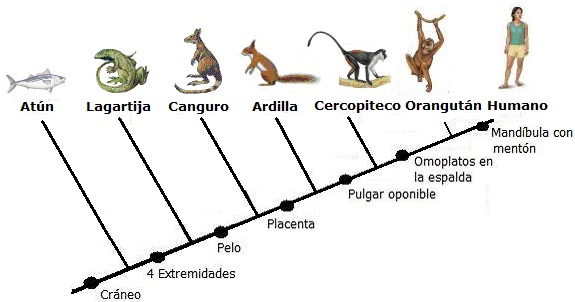
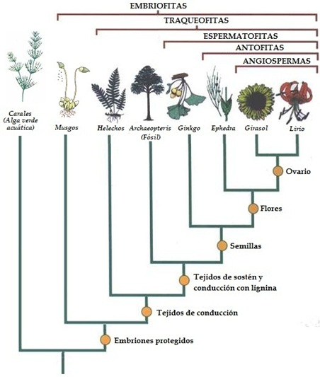

Para desarrollar la siguiente actividad es necesario que te hayas documentado sobre lo que es un cladograma. Si no lo sabes te recomendamos leer Cladogramas: Ilustrando el parentesco evolutivo. Si tienes duda sobre algún término presente en este taller te recomendamos consultar el glosario que se encuentra al final del presente texto o a tu profesor.
Resuelve las preguntas 1 - 4 con base en la siguiente información:
En biología evolutiva se considera que las características anatómicas más generalizadas en un grupo taxonómico son más antiguas, mientras que las que se encuentran restringidas a grupos más pequeños son más recientes. La gráfica que se muestra a continuación ejemplifica esta situación para los vertebrados:
-
Según lo anteriormente expuesto se puede afirmar correctamente que:
La aparición del pulgar oponible precedió a la aparición del pelo.
La aparición del pelo en los mamíferos se dio mucho antes que la aparición del pulgar oponible en los primates.
La evolución de la placenta fue anterior a la evolución de un mentón en la mandíbula.
La presencia de cuatro extremidades en los vertebrados es una característica de evolución más reciente que la del cráneo.
-
Según la información proporcionada por el cladograma se puede afirmar correctamente que
el canguro posee pelo pero no un pulgar oponible.
los orangutanes y los humanos tienen mandíbula con mentón.
el atún carece de un cráneo óseo
el canguro es un mamífero placentario.
-
Son características comunes al canguro y al orangután
el pulgar oponible, placenta y pelo
el cráneo, cuatro extremidades y el pelo.
El mentón en la mandíbula y los omoplatos en la espalda.
ninguna.
-
El tener los omoplatos en la espalda, y no a los lados del cuerpo, es una característica común a
el orangután y el ser humano.
el cercopiteco y el orangután.
a la lagartija y el canguro.
al canguro y la ardilla.
Resuelve las preguntas 5 y 6 con base en la siguiente información:
En la clasificación de los seres vivos se pueden encontrar dos tipos de estructuras: las estructuras análogas y las estructuras homólogas. Las primeras tienen una función similar, pero sus antecedentes evolutivos son completamente distintos. Las estructuras homólogas por su parte, tienen un origen común (vienen de un mismo ancestro) aunque su función y aspecto pueden ser diferentes.

Como ejemplo de lo anterior se presenta el siguiente cladograma:

-
El anterior cladograma muestra las relaciones evolutivas entre siete especies de vertebrados. Según lo expresado en este se puede afirmar que
el pelo es una estructura análoga entre la zarigüeya y el mono araña
el amnios separa evolutivamente al topo marsupial y al topo europeo
el marsupio es una estructura homóloga para la zarigüeya y el topo marsupial
el brazo adaptado para cavar es una característica que heredaron los topos marsupiales y los topos europeos de un mismo ancestro.
-
La extremidad anterior aves y murciélagos es considerada una estructura homóloga porque
cada linaje evolucionó por separado la extremidad anterior.
el vuelo de las aves es más eficiente que el de los murciélagos
las alas fueron heredadas de un mismo ancestro de ambos linajes
la extremidad fue heredada de un mismo ancestro, lo que se evidencia en la secuencia de huesos.
-
El aspecto similar de la extremidad anterior y del cuerpo en general del topo marsupial y el topo europeo se puede explicar por
la adaptación a modos de vida similares.
la herencia desde un mismo ancestro de la mano apta para cavar.
la adquisición de estructuras homólogas en ambos grupos.
la adaptación a ambientes diferentes.
El siguiente cladograma muestra cuatro especies con el cuerpo hidrodinámico:

-
Por lo indicado en el cladograma se puede inferir que la forma fusiforme de los ictiosaurios y delfines:
es resultado de divergencia evolutiva
fue heredada de un antepasado común
es resultado de convergencia evolutiva
es inexplicable en la biología evolutiva
-
En biología se considera que conforman un grupo natural todos los contenidos en un clado que comparte un ancestro común (uno que no compartan con ningún otro organismo del diagrama). Si en una clasificación se colocan al buitre leonado, al buitre americano, al rey de los gallinazos y demás aves de carroña en una misma familia. Este intento de clasificación:
Es acorde con que todos los buitres forman un grupo natural.
Demuestra que características como el cuello sin plumas evolucionó una sola vez.
Ignora que dos linajes de aves llegaron por convergencia evolutiva a parecerse.
Deja de lado que el buitre leonado está más cercanamente emparentado con las cigüeñas.
-
Los invertebrados son la mayoría de los animales. Entre ellos podemos encontrar una enorme diversidad de formas anatómicas. Durante mucho tiempo se ha estudiado la relación evolutiva entre los diferentes grupos. Hoy se considera que los animales protostomados (en los que el embrión desarrolla primero una boca) que incluye a los moluscos, anélidos, nematodos y artrópodos, entre otros se dividen en dos grandes grupos: Los que tienen exoesqueletos que deben mudar, los ecdisozoos y los que no poseen exoesqueleto: los lofotrocozoos. Otras características como la metamería, o el hecho de tener circulación cerrada (en la que el líquido circulante siempre está dentro de vasos sanguíneos) parecen haber evolucionado varias veces en grupos diferentes. Algunos grupos de animales presentan metamerismo, es decir tienen su cuerpo organizado en una serie de elementos que se repiten. Los anélidos y los artrópodos son grupos de animales que presentan metamería, mientras que los moluscos no.

Si sabemos que las características homólogas de los organismos reflejan un antepasado común se puede afirmar que el diagrama que mejor refleja las relaciones evolutivas entre artrópodos, moluscos y anélidos es:

-
Uno de los logros más grandes del naturalista Charles Darwin fue el de descubrir que todas las especies de la Tierra tienen antepasados en común. Unas especies están más emparentadas con otras, y esto se puede evidenciar al comparar sus secuencias de ADN y la anatomía comparada. El siguiente cladograma muestra la historia evolutiva de un grupo de especies clasificadas en el Orden Carnívora. Se muestran solo cinco especies.

De acuerdo con esto podría afirmarse que correctamente que
existen más características esqueléticas en común entre el puma y el fosa que entre el fosa y el suricato.
las secuencias de ADN serán más similares entre la civeta y le hiena, que entre la hiena y el suricato.
existen más características esqueléticas en común entre la hiena y el suricato, que entre el suricato y el fosa.
las secuencias de ADN serán más similares entre el fosa y el suricato, que entre el suricato y el puma.
-
Un clado está dado por todas las especies que descienden de una misma ancestral. El siguiente cladograma muestra las relaciones evolutivas de las aves modernas, representadas por el correcaminos con aves fósiles y otros dinosaurios manirraptores, ya extintos.

Los números en el cladograma indican un antepasado común con una característica que define cada clado.
Se puede afirmar correctamente que
4 es antepasado de Archaeopteryx y del correcaminos.
El antepasado común más próximo entre el correcaminos y Anchiornis es 2.
1 es antepasado de todos los organismos presentes excepto el Velociraptor.
5 es antepasado de Confuciosornis, Icthyoronis y el Geococcyx.
-
En la clasificación sistemática las novedades evolutivas de un grupo reciben el nombre de sinapomorfías. El siguiente cladograma muestra cuatro clados y las características que lo definen.

Teniendo en cuenta las características de cada grupo se puede afirmar que
El clado 1 es el de los vertebrados, el clado 2 el de los mamíferos, el clado 3 el de los rumiantes y el clado 4 el de los equídos.
El clado 1 es el de los amniotas, el clado 2 el de los marsupiales, el clado 3 el de los rumiantes y el clado 4 el de los bovídos.
El clado 1 es el de los vertebrados, el clado 2 el de los mamíferos, el clado 3 el de los rumiantes y el clado 4 el de los perisodáctilos.
El clado 1 es el de los amniotas, el clado 2 el de los mamíferos, el clado 3 el de los perisodáctilos y el clado 4 el de los rumiantes.
Responde las preguntas 14 y 15 teniendo en cuenta el siguiente información.
En América hay una familia de ranas tropicales llamada Dendrobatidae conocidos como ranas venenosas de dardo o ranas punta de flecha. Este familia incluye más de 180 especies agrupadas en unos 13 géneros (en número de estos taxones puede variar).
-
Las siguientes imágenes muestran la relación entre algunos géneros de la familia Dendrobatidae.

Según el anterior cladograma es posible afirmar que
Las especies de ranas venenosas de dardo no están evolutivamente emparentadas entre sí.
El género Oophaga no pertenece a la familia Dendrobatidae
El género Oophaga está más relacionado con el género Ranitomeya que con el género Dendrobates
Todos los dendrobátidos descienden de un mismo antepasado común.
-
La rana flecha roja y azul (Oophaga pumilio) es una especie de dendrobátido que tiene una gran diversidad en su coloración a lo largo de su distribución geográfica en Nicaragua, Costa Rica y Panamá. Por esta razón un biólogo ha comparado secuencias de ADN mitocondrial de diferentes poblaciones de Costa Rica y Panamá para intentar dilucidar las relaciones evolutivas entre estas.
Los resultados de este análisis se presentan en el siguiente cladograma:

En el cladograma se muestra una gran similitud entre las secuencias genéticas mitocondriales entre las poblaciones de O. pumilio de Siquirres, Costa Rica y la especie O. arboreus. Una situación similar se presenta al ver las similitudes de las secuencias de las poblaciones de O. pumilio de Escudo Veraguas, Panamá y la de la especie O. especiosus. Lo anterior indica que:
La diversidad genética y de coloración de las especies rana dardo es muy alta.
Las poblaciones de esta especie muestran cómo se forman nuevas especies.
Genéticamente se pueden encontrar dos grandes grupos que separan poblaciones de la especie hoy conocida como Oophaga pumilio.
Todas las anteriores.
Responde las preguntas 16 y 17 teniendo en cuenta el siguiente cladograma:
-
Según el diagrama se puede afirmar todo EXCEPTO que
Las angiospermas poseen ovarios.
Los musgos carecen de xilema y de floema para transportar el agua y los nutrientes.
Los helechos se reproducen por semillas.
Las angiospermas también son espermatofitas.
-
De la gráfica se puede inferir que
todas las plantas descienden de las algas carales.
el lirio es el organismo más evolucionado.
todas las plantas comparten una comunidad de descendencia.
las plantas con flores son el grupo más antiguo de vegetales.
Teniendo en cuenta el anterior cladograma califica los siguientes enunciados como falsos o verdaderos:
El ginkgo comparte con el helecho la característica de poseer vasos conductores. (F/V)
Se puede decir que toda planta de girasol posee flores, semillas y sistema vascular. (F/V)
Los musgos carecen de xilema y de floema para transportar el agua y los nutrientes. (F/V)
Un musgo carece de semillas, pero tiene protegidos sus embriones. (F/V)
Ubica los organismos que se relacionan a continuación en el cladograma que se ilustra abajo. Ten en cuenta que las características compartidas ya están indicadas.


Según el anterior cladograma responde:
¿Qué características son más antiguas en la evolución del linaje humano?
¿Qué características de las señaladas en el cladograma comparten el hombre y el gorila?.
¿Es correcto afirmar que las percas son “más evolucionadas” que los tiburones por estar ubicadas a la derecha de estos en el cladograma?
¿Qué organismos del cladograma son eucariotas?
¿Por qué crees que todos los seres vivos se pueden ubicar en grupos anidados dentro de otros grupos?
GLOSARIO
Amniota: Vertebrados cuyos embriones poseen una membrana denominada amnios. El amnios encierra un espacio lleno de líquido (el líquido amniotico) alrededor del embrión en desarrollo. Los reptiles, aves y mamíferos son amniotas.
Anélidos: Gusanos con celoma (cavidad del cuerpo revestida por el peritoneo) con el cuerpo dividido en anillos semejantes. Los anélidos poseen un sistema nervioso que consta de ganglios cerebroidios y dos cordones nerviosos fusionados que recorren el cuerpo; su sistema circulatorio es cerrado, con vasos circulatorios musculares, impulsan la sangre por medio de arcos aórticos. Los anélidos más representativos son la lombriz de tierra y las sanguijuelas. Angiosperma: Son las plantas que producen flores. El término angiosperma proviene del griego angeion = vaso y sperma = semilla. Literalmente significa “semilla guardada o semilla cubierta” ya que en ellas las semillas están protegidas por los ovarios maduros (el fruto).
Artrópodos: Animales de simetría bilateral con patas articuladas y esqueleto externo. El grupo de los artrópodos incluye a los insectos, arácnidos, crustáceos, las cacerolas de mar, trilobites, entre otros. Los artrópodos tienen un sistema muscular complejo, el cual se une a su exoesqueleto; un sistema circulatorio abierto con un corazón contráctil y un sistema nervioso similar al de los anélidos.
Cordados: Animales celomados que poseen, al menos en estado embrionario, las siguientes características: Una varilla esquelética en la parte dorsal, llamada notocorda, hendiduras faríngeas, cordón nervioso tubular dorsal, cola postanal. Los seres humanos son cordados, solo que las características del grupo están presentes mientras que están desarrollándose como embriones. Los vertebrados son un subgrupo de los cordados.
Espermatofita: Plantas que se reproducen por semillas. Este grupo incluye a las gimnospermas y angioespermas.
Eucariotas: Célula que posee un núcleo delimitado por una membrana (la membrana nuclear), además de organelos como mitocondrias, retículo endoplasmático y aparato de Golgi. Las células eucariotas poseen cromosomas en los que el ADN está asociado a proteínas denominadas histonas. El término eucariota también se aplica a los organismos formados por este tipo de células.
Euterio: Mamífero en el cual se invierte más tiempo y energía en la gestación y que dan a luz crías en un estado avanzado de desarrollo. Estos mamíferos tienen una placenta compleja (corioalantoidea). Los humanos, los conejos y los murciélagos son euterios; los canguros y demás marsupiales no son euterios porque ellos poseen una placenta primitiva (coriovitelina) además que dan a luz crías demasiado inmaduras.
Filogenético: Que hace referencia a la historia evolutiva de un grupo de organismos.
Floema: Tejido vascular de las plantas traqueofitas que conducen los azucares y otras moléculas elaboradas desde las hojas hasta partes.
Glándula sebácea: Estructuras de la piel de los mamíferos encargadas de producir grasas o lípidos que permiten el cuidado de la piel.
Gimnosperma: Plantas con semillas que no están encerradas en el ovario. El término significa literalmente “semillas desnudas”. Los pinos, cipreces y araucarias con las gimnospermas más familiares.
Grupo taxonómico: Grupo de clasificación de seres vivos.
Mamífero: Vertebrados que se caracterizan por tener pelo, glándulas mamarias, tres huesecillos en el oído medio, glándulas sebáceas en la piel, corazón dividido en cuatro cavidades, y que alimentan a sus crías con leche. Los humanos, las ratas y los delfines son ejemplos de mamíferos.
Metamería: Tipo de organización corporal de los animales a base de elementos repetidos (metámeros).
Metámero: Unidad corporal que se repite a lo largo del eje longitudinal de cuerpo de un animal. Los términos somito y segmento pueden utilizarse como sinónimos.
Molusco: Grupo de animales invertebrados que se caracterizan por poseer simetría bilateral, un píe muscular, un órgano raspador denominado rádula y un par de pliegues en la parte dorsal llamada manto. Los caracoles, babosas de mar, babosas de tierra, calamares y pulpos son los moluscos más conocidos.
Musgo: Planta poco compleja que carece de sistema vascular, raíces verdaderas, hojas verdaderas y que también carece de flores.
Nuevo Mundo: Término con el que se designa a América.
Omoplato: Huesos planos, pares, de forma casi triangular que se encuentran en la espalda del hombre y los grandes simios, detrás de la caja torácica y en otros animales se encuentra a los lados del cuerpo. El omoplato se articula al húmero (hueso del brazo) por medio de la cavidad glenoidea y a la clavícula (en los mamíferos que aún la conservan) por una saliente denominada acromión. En el hombre y los grandes simios el omoplato tiene su parte más ancha en la parte superior, mientras que es más angosto en la inferior.
Perisodáctilo: Grupo de mamíferos placentarios de dedos impares. Incluye a los tapires, rinocerontes, caballos, cebras y asnos.
Placenta: Tejido que permite el intercambio de nutrientes y desechos entre la madre y el embrión en los mamíferos placentarios. La placenta proviene de la interacción de entre el revestimiento interno del útero de la madre y el corión (membrana extrafetal).
Placentario: Mamífero en el que sus embriones se desarrollan en una placenta corionalantoidea y cuya inversión reproductiva se centra en la gestación (a diferencia de los marsupiales que invierten en la lactancia). Todos los mamíferos exceptuando los monotremas y marsupiales son placentarios. El término placentario es sinónimo de euterio.
Primates: Mamíferos placentarios que se caracterizan por tener visión binocular, pulgares oponibles, clavículas presentes y funcionales. Los humanos, los chimpancés y los lémures son ejemplos de primates.
Rumiantes: (Suborden Ruminantia) son un suborden de mamíferos artiodáctilos. Los rumiantes digieren los alimentos en dos pasos: masticando y tragando de manera normal y, luego regurgitando el bolo para remasticar y volver a tragar, y así extraer al máximo el valor nutritivo. El estómago de los rumiantes se caracteriza por poseer varias divisiones (cuatro en el caso de los bovinos, ovinos y caprinos).
Semilla: Estructura compleja formada por la maduración del óvulo de las plantas con semillas (espermatofitas) después de la fecundación.
Sistema vascular: En vegetales hace referencia al sistema formado poe el xilema y el floema, por el cual se conducen los fluidos.
Traqueofitas: Grupo de vegetales que desarrollaron el sistema vascular. Los helechos, gimnospermas y angiospermas pertenecen al grupo de las traqueofitas.
Tetrápodos: Grupo de vertebrados que heredaron cuatro extremidades a partir de las aletas lobuladas de los peces sarcopterigios. Los anfibios, reptiles, aves y mamíferos son tetrápodos.
Vertebras: Huesos cortos en forma de anillos que forman la columna vertebral.
Viejo Mundo: Término con el que se designa a Europa, Asia y África.
Xilema: Tejido vascular complejo de algunos vegetales a través del cual es conducida la mayor parte del agua y de los minerales desde las raíces a otras partes de la planta . El xilema constituye la madera de los árboles y arbustos.
Nota
Este taller fue producido sin ánimo de lucro. Si desea divulgar o reproducir este texto recuerde que esto se permite con fines educativos, siempre y cuando se mencione su fuente:
Sitio: Sindioses.org
Sección: Ciencias de los orígenes.
Página: http://www.sindioses.org/cienciaorigenes/cladotaller.html.
(Este artículo es una segunda edición. La primera fue publicada el 6 de abril de 2007)
Volver a la sección Ciencias de los orígenes
Comentarios
Comments powered by Disqus